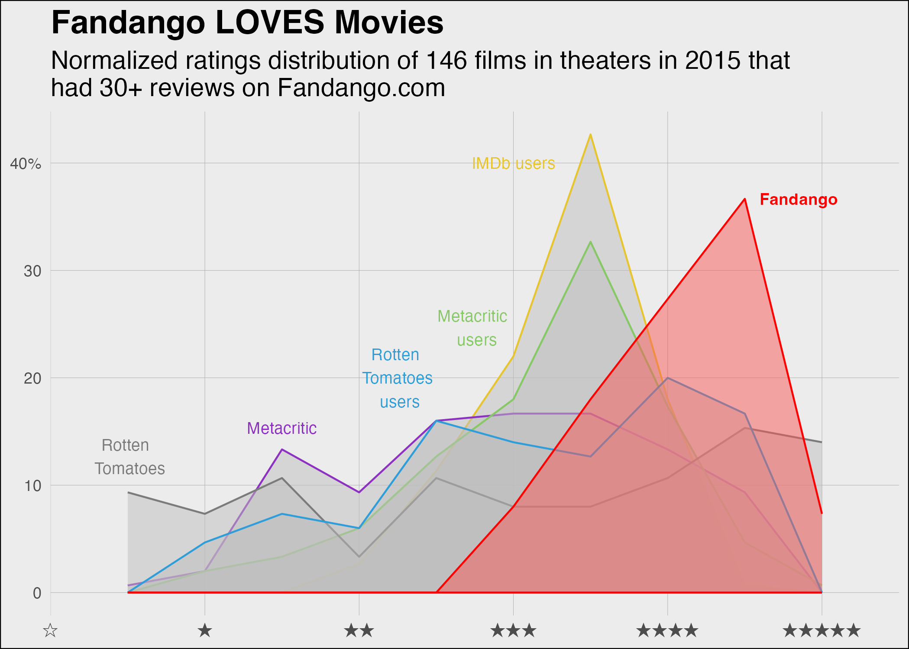
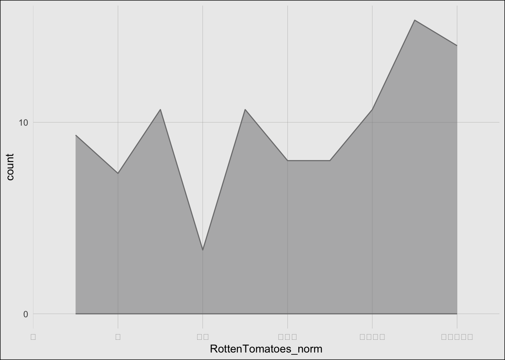

I chose to recreate a graph that shows the distribution of movie ratings on the star scale from Fandango, IMDb, IMDb users, Metacritic, Metacritic users, and Rotten Tomatoes, and Rotten Tomatoes users.
Rows: 146 Columns: 22
── Column specification ────────────────────────────────────────────────────────
Delimiter: ","
chr (1): FILM
dbl (21): RottenTomatoes, RottenTomatoes_User, Metacritic, Metacritic_User, ...
ℹ Use `spec()` to retrieve the full column specification for this data.
ℹ Specify the column types or set `show_col_types = FALSE` to quiet this message.
Version One: Creating Initial Graph
I used Microsoft Copilot, and occasionally ChatGPT, for this assignment. First, I sent Microsoft Copilot the data nad the graph that I wanted to recreate. I asked it to provide me with code to do so.
Sent Data to Microsoft Copilot Here is the data fandango_score_comparison.csv
Send Microsoft Copilot a .pdf of the graph that I was aiming to recreate fandangocomparison.pdf how do i recreate this graph (with the same shape, rather than a histogram with bars) using the data provided?
Answer: Install and load necessary packages install.packages(“ggplot2”) library(ggplot2)
Read the CSV file df <- read.csv(“path/to/your/fandango_score_comparison.csv”)
Create the density plots ggplot() + geom_density(data = df, aes(x = Fandango_Stars_norm, fill = “Fandango”), alpha = 0.5) + geom_density(data = df, aes(x = Fandango_Ratingvalue_norm, fill = “Fandango Rating Value”), alpha = 0.5) + geom_density(data = df, aes(x = IMDB_norm, fill = “IMDb”), alpha = 0.5) + geom_density(data = df, aes(x = Metacritic_norm, fill = “Metacritic”), alpha = 0.5) + geom_density(data = df, aes(x = Metacritic_User_norm, fill = “Metacritic users”), alpha = 0.5) + geom_density(data = df, aes(x = RottenTomatoes_norm, fill = “Rotten Tomatoes”), alpha = 0.5) + geom_density(data = df, aes(x = RottenTomatoes_User_norm, fill = “Rotten Tomatoes users”), alpha = 0.5) + labs(title = “Normalized Ratings Distribution of 146 Films in Theaters in 2015”, x = “Normalized Rating”, y = “Density”) + scale_fill_manual(name = “Source”, values = c(“Fandango” = “blue”, “Fandango Rating Value” = “cyan”, “IMDb” = “red”, “Metacritic” = “green”, “Metacritic users” = “darkgreen”, “Rotten Tomatoes” = “purple”, “Rotten Tomatoes users” = “violet”)) + theme_minimal()
Save the plot ggsave(“fandangocomparison_replicated.pdf”)
I ran the code in the code chunk below.
# Normalize the ratingsdf$Fandango_Stars_norm <- df$Fandango_Stars /5df$IMDB_norm <- df$IMDB /10df$Metacritic_norm <- df$Metacritic /100df$Metacritic_User_norm <- df$Metacritic_User /10df$RottenTomatoes_norm <- df$RottenTomatoes /100df$RottenTomatoes_User_norm <- df$RottenTomatoes_User /100# Create the density plotsversion_one <-ggplot() +geom_density(data = df, aes(x = Fandango_Stars_norm, fill ="Fandango"), alpha =0.5) +geom_density(data = df, aes(x = IMDB_norm, fill ="IMDb"), alpha =0.5) +geom_density(data = df, aes(x = Metacritic_norm, fill ="Metacritic"), alpha =0.5) +geom_density(data = df, aes(x = Metacritic_User_norm, fill ="Metacritic users"), alpha =0.5) +geom_density(data = df, aes(x = RottenTomatoes_norm, fill ="Rotten Tomatoes"), alpha =0.5) +geom_density(data = df, aes(x = RottenTomatoes_User_norm, fill ="Rotten Tomatoes users"), alpha =0.5) +labs(title ="Normalized Ratings Distribution of 146 Films in Theaters in 2015",x ="Normalized Rating",y ="Density") +scale_fill_manual(name ="Source", values =c("Fandango"="blue", "IMDb"="red", "Metacritic"="green", "Metacritic users"="darkgreen", "Rotten Tomatoes"="purple", "Rotten Tomatoes users"="violet")) +theme_minimal()version_one
figure_file =here("presentation-exercise", "graphs", "version_one.png") ggsave(filename = figure_file, plot = version_one) # saving the plot as "version_one"
Saving 7 x 5 in image
Version Two: Editing Graph to Better Match the Original Version
I manually edited the colors to fit the ones assigned to each source within the original graph. I simply did this by using hex codes online or typing in basic colors (such as “red”). Additionally, I changed the title under the labs() function.
version_two <-ggplot() +geom_density(data = df, aes(x = Fandango_Stars_norm, fill ="Fandango"), alpha =0.5) +geom_density(data = df, aes(x = IMDB_norm, fill ="IMDb"), alpha =0.5) +geom_density(data = df, aes(x = Metacritic_norm, fill ="Metacritic"), alpha =0.5) +geom_density(data = df, aes(x = Metacritic_User_norm, fill ="Metacritic users"), alpha =0.5) +geom_density(data = df, aes(x = RottenTomatoes_norm, fill ="Rotten Tomatoes"), alpha =0.5) +geom_density(data = df, aes(x = RottenTomatoes_User_norm, fill ="Rotten Tomatoes users"), alpha =0.5) +labs(title ="Fandango LOVES Movies",x ="Normalized Rating",y ="Density") +scale_fill_manual(name ="Source", values =c("Fandango"="red", "IMDb"="gold", "Metacritic"="#8d31c1", "Metacritic users"="#94e13d", "Rotten Tomatoes"="#7b7b7c", "Rotten Tomatoes users"="#309dd8")) +# update colors to match those of the original graph theme_minimal() version_two
figure_file =here("presentation-exercise", "graphs", "version_two.png")ggsave(filename = figure_file, plot = version_two) # saving the plot as "version_two"
Saving 7 x 5 in image
Version Three: Editing Graph MORE to Better Match the Original Version
I asked ChatGPT: how do I get rid of the legend and add the labels within the legend next to their corresponding areas within the graph?
Answer: theme(legend.position = “none”) + # Removes the legend geom_text(aes(x = 1, y = 0.15, label = “Fandango”, color = “red”), size = 5, data = data.frame(), inherit.aes = FALSE) + # Add label for Fandango geom_text(aes(x = 1, y = 0.13, label = “IMDb”, color = “gold”), size = 5, data = data.frame(), inherit.aes = FALSE) + # Add label for IMDb geom_text(aes(x = 1, y = 0.11, label = “Metacritic”, color = “#8d31c1”), size = 5, data = data.frame(), inherit.aes = FALSE) + # Add label for Metacritic geom_text(aes(x = 1, y = 0.09, label = “Metacritic users”, color = “#94e13d”), size = 5, data = data.frame(), inherit.aes = FALSE) + # Add label for Metacritic users geom_text(aes(x = 1, y = 0.07, label = “Rotten Tomatoes”, color = “#7b7b7c”), size = 5, data = data.frame(), inherit.aes = FALSE) + # Add label for Rotten Tomatoes geom_text(aes(x = 1, y = 0.05, label = “Rotten Tomatoes users”, color = “#309dd8”), size = 5, data = data.frame(), inherit.aes = FALSE) # Add label for Rotten Tomatoes users
I manually changed the color of the IMDb users density/text to be a darker gold for better visibility. Additionally, I changed the name that ChatGPT gave me for the label from “IBDb” to “IMDb users” to match the original graph.
After a few more intermediate steps: - I changed the theme of the graph to include a gray background and gray gridlines - I changed the positions of the labels to match the original graph - I fixed the x and y axes - I added a subtitle - I changed geom_density to stat_density and added their respective colors - I made the area under the densities gray with an outline of their respective color
version_three <-ggplot(df) +# Adding densities/areasstat_density(aes(x = Fandango_Stars_norm, fill ="Fandango"), geom ="area", alpha =0.5, color ="red") +stat_density(aes(x = IMDB_norm, fill ="IMDb"), geom ="area", alpha =0.5, color ="#e6c531") +stat_density(aes(x = Metacritic_norm, fill ="Metacritic"), geom ="area", alpha =0.5, color ="#8d31c1") +stat_density(aes(x = Metacritic_User_norm, fill ="Metacritic users"), geom ="area", alpha =0.5, color ="#94e13d") +stat_density(aes(x = RottenTomatoes_norm, fill ="Rotten Tomatoes"), geom ="area", alpha =0.5, color ="#7b7b7c") +stat_density(aes(x = RottenTomatoes_User_norm, fill ="Rotten Tomatoes users"), geom ="area", alpha =0.5, color ="#309dd8") +# Adding title and subtitlelabs(title ="Fandango LOVES Movies",subtitle ="Normalized ratings distribution of 146 films in theaters in 2015 that \nhad 30+ reviews on Fandango.com", x =NULL, y =NULL) +# Adding fill colors for the densities/areasscale_fill_manual(name ="Source", values =c("Fandango"="#f95858", "IMDb"="grey", "Metacritic"="grey", "Metacritic users"="grey", "Rotten Tomatoes"="grey", "Rotten Tomatoes users"="grey")) +# Changing background to grey with grey and thin gridlinestheme_minimal() +theme(legend.position ="none", plot.background =element_rect(fill ="#ececec"), panel.grid.major =element_line(color ="#a7a7a5", size =0.1), panel.grid.minor =element_line(color ="#a7a7a5", size =0.1), panel.grid =element_line(color ="transparent"), plot.title =element_text(face ="bold", size =14), plot.subtitle =element_text(size =10)) +# Adding labels and placing them in the appropriate spot on the graph geom_text(aes(x =0.97, y =3.75, label ="Fandango"), color ="red", size =2.5, data =data.frame(), inherit.aes =FALSE) +geom_text(aes(x = .65, y =4.2, label ="IMDb users"), color ="#e6c531", size =2.5, data =data.frame(), inherit.aes =FALSE) +geom_text(aes(x =0.3, y =1.5, label ="Metacritic"), color ="#8d31c1", size =2.5, data =data.frame(), inherit.aes =FALSE) +geom_text(aes(x =0.57, y =2.5, label ="Metacritic \n users"), color ="#94e13d", size =2.5, data =data.frame(), inherit.aes =FALSE) +geom_text(aes(x =0.1, y =1.2, label ="Rotten \n Tomatoes"), color ="#7b7b7c", size =2.5, data =data.frame(), inherit.aes =FALSE) +geom_text(aes(x =0.45, y =1.9 , label ="Rotten \n Tomatoes \n users"), color ="#309dd8", size =2.5, data =data.frame(), inherit.aes =FALSE) +# Changing the x and y axis labels to match the original graphscale_x_continuous(breaks =c(0, 0.2, 0.4, 0.6, 0.8, 1), labels =c("☆", "★", "★★", "★★★", "★★★★", "★★★★★")) +# the stars appear in the png versionscale_y_continuous(breaks =c(0, 1, 2, 3, 4), labels =c("0", "10", "20", "30", "40%"))
Warning: The `size` argument of `element_line()` is deprecated as of ggplot2 3.4.0.
ℹ Please use the `linewidth` argument instead.
version_three
figure_file =here("presentation-exercise", "graphs", "version_three.png")ggsave(filename = figure_file, plot = version_three) # saving the plot as "version_three"
Saving 7 x 5 in image
Version Four: Creating Final Version
For the final version, I made the following changes: - I made the “fandango” label bold (just like it is in the original graph) - I made the font size of the title and subtitle larger - I updated the color of the green in “Metacritic users” to be a bit darker - I removed the “minor” gridlines
Additionally, I asked Microsoft Copilot to change the geom from stat_density to stat_bin. Stat_bin will better help me recreate the original graph than geom_density or stat_density.
Answer: stat_bin(aes(x = Fandango_Stars_norm, fill = “Fandango”), geom = “area”, alpha = 0.5, color = “red”, binwidth = 0.1, position = “identity”) + stat_bin(aes(x = IMDB_norm, fill = “IMDb”), geom = “area”, alpha = 0.5, color = “#f7ca62”, binwidth = 0.1, position = “identity”) + stat_bin(aes(x = Metacritic_norm, fill = “Metacritic”), geom = “area”, alpha = 0.5, color = “#8d31c1”, binwidth = 0.1, position = “identity”) + stat_bin(aes(x = Metacritic_User_norm, fill = “Metacritic users”), geom = “area”, alpha = 0.5, color = “#94e13d”, binwidth = 0.1, position = “identity”) + stat_bin(aes(x = RottenTomatoes_norm, fill = “Rotten Tomatoes”), geom = “area”, alpha = 0.5, color = “#7b7b7c”, binwidth = 0.1, position = “identity”) + stat_bin(aes(x = RottenTomatoes_User_norm, fill = “Rotten Tomatoes users”), geom = “area”, alpha = 0.5, color = “#309dd8”, binwidth = 0.1, position = “identity”) +
After fixing the geom/stat, I realized the y-axis had been messed up. I used code to fix the y-axis and fix the source labels within the graph.
version_four <-ggplot(df) +# Adding densities/areasstat_bin(aes(x = IMDB_norm, fill ="IMDb"), geom ="area", alpha =0.5, color ="#e6c531", binwidth =0.1, position ="identity") +stat_bin(aes(x = Metacritic_norm, fill ="Metacritic"), geom ="area", alpha =0.5, color ="#8d31c1", binwidth =0.1, position ="identity") +stat_bin(aes(x = Metacritic_User_norm, fill ="Metacritic users"), geom ="area", alpha =0.5, color ="#87c866", binwidth =0.1, position ="identity") +stat_bin(aes(x = RottenTomatoes_norm, fill ="Rotten Tomatoes"), geom ="area", alpha =0.5, color ="#7b7b7c", binwidth =0.1, position ="identity") +stat_bin(aes(x = RottenTomatoes_User_norm, fill ="Rotten Tomatoes users"), geom ="area", alpha =0.5, color ="#309dd8", binwidth =0.1, position ="identity") +stat_bin(aes(x = Fandango_Stars_norm, fill ="Fandango"), geom ="area", alpha =0.5, color ="red", binwidth =0.1, position ="identity") +# Adding title and subtitlelabs(title ="Fandango LOVES Movies",subtitle ="Normalized ratings distribution of 146 films in theaters in 2015 that \nhad 30+ reviews on Fandango.com", x =NULL, y =NULL) +# Adding fill colors for the densities/areasscale_fill_manual(name ="Source", values =c("Fandango"="#f95858", "IMDb"="grey", "Metacritic"="grey", "Metacritic users"="grey", "Rotten Tomatoes"="grey", "Rotten Tomatoes users"="grey")) +# Changing background to grey with grey and thin gridlinestheme_minimal() +theme(legend.position ="none", plot.background =element_rect(fill ="#ececec"), panel.grid.major =element_line(color ="#a7a7a5", size =0.1), panel.grid =element_line(color ="transparent"), plot.title =element_text(face ="bold", size =18), # Bigger titleplot.subtitle =element_text(size =14)) +# Bigger subtitle# Adding labels and placing them in the appropriate spot on the graph geom_text(aes(x =0.97, y =55, label ="Fandango"), color ="red", size =3.2, fontface ="bold", data =data.frame(), inherit.aes =FALSE) +# only bold "Fandango"geom_text(aes(x = .6, y =60, label ="IMDb users"), color ="#e6c531", size =3.2, data =data.frame(), inherit.aes =FALSE) +geom_text(aes(x =0.3, y =23, label ="Metacritic"), color ="#8d31c1", size =3.2, data =data.frame(), inherit.aes =FALSE) +geom_text(aes(x =0.55, y =37, label ="Metacritic \n users"), color ="#87c866", size =3.2, data =data.frame(), inherit.aes =FALSE) +geom_text(aes(x =0.1, y =19, label ="Rotten \n Tomatoes"), color ="#7b7b7c", size =3.2, data =data.frame(), inherit.aes =FALSE) +geom_text(aes(x =0.45, y =30 , label ="Rotten \n Tomatoes \n users"), color ="#309dd8", size =3.2, data =data.frame(), inherit.aes =FALSE) +# Changing the x and y axis labels to match the original graphscale_x_continuous(breaks =c(0, 0.2, 0.4, 0.6, 0.8, 1), labels =c("☆", "★", "★★", "★★★", "★★★★", "★★★★★")) +# the stars appear in the png versionscale_y_continuous(breaks =c(0, 15, 30, 45, 60), labels =c("0", "10", "20", "30", "40%"))version_four
figure_file =here("presentation-exercise", "graphs", "version_four.png")ggsave(filename = figure_file, plot = version_four) # saving the plot as "version_four"
Saving 7 x 5 in image
Final Version of Graph vs Original Graph
The stars used on the x-axis to represent the ratings did not appear in the output on my computer in R Studio. However, the stars appear in the .png file attached below.

For the most part, I believe that I was able to successfully recreate the original graph. It appears that the distriution of the ratings among the different sources is pretty similar to that of the original graph. There are miniscule differences. Another element that I had difficulty in recreating from the original graph was making the areas overlap in the same way that they do in the original graph.
Creating Publication Quality Table
Load Packages
library(dplyr)library(tidyr)library(kableExtra)
Attaching package: 'kableExtra'
The following object is masked from 'package:dplyr':
group_rows
I used Microsoft Copilot and ChatGPT. I asked it to create a graph in which the columns were: mean, median, minimum, maximum rating values, and distribution plot. I asked for the rows to be: Fandango, IMDb, IMDb users, Metacritic, Metacritic users, Rotten Tomatoes, and Rotten Tomatoes users. There were MANY small things that I had to fix.
# Load required librarieslibrary(dplyr)library(tidyr)library(gt)library(purrr)# Step 1: Summarize the datatable <- df %>%select(Fandango_Stars_norm, IMDB_norm, Metacritic_norm, Metacritic_User_norm, RottenTomatoes_norm, RottenTomatoes_User_norm) %>%summarise(Fandango_mean =mean(Fandango_Stars_norm, na.rm =TRUE),Fandango_median =median(Fandango_Stars_norm, na.rm =TRUE),Fandango_min =min(Fandango_Stars_norm, na.rm =TRUE),Fandango_max =max(Fandango_Stars_norm, na.rm =TRUE),IMDB_mean =mean(IMDB_norm, na.rm =TRUE),IMDB_median =median(IMDB_norm, na.rm =TRUE),IMDB_min =min(IMDB_norm, na.rm =TRUE),IMDB_max =max(IMDB_norm, na.rm =TRUE),Metacritic_mean =mean(Metacritic_norm, na.rm =TRUE),Metacritic_median =median(Metacritic_norm, na.rm =TRUE),Metacritic_min =min(Metacritic_norm, na.rm =TRUE),Metacritic_max =max(Metacritic_norm, na.rm =TRUE),Metacritic_User_mean =mean(Metacritic_User_norm, na.rm =TRUE),Metacritic_User_median =median(Metacritic_User_norm, na.rm =TRUE),Metacritic_User_min =min(Metacritic_User_norm, na.rm =TRUE),Metacritic_User_max =max(Metacritic_User_norm, na.rm =TRUE),RottenTomatoes_mean =mean(RottenTomatoes_norm, na.rm =TRUE),RottenTomatoes_median =median(RottenTomatoes_norm, na.rm =TRUE),RottenTomatoes_min =min(RottenTomatoes_norm, na.rm =TRUE),RottenTomatoes_max =max(RottenTomatoes_norm, na.rm =TRUE),RottenTomatoes_User_mean =mean(RottenTomatoes_User_norm, na.rm =TRUE),RottenTomatoes_User_median =median(RottenTomatoes_User_norm, na.rm =TRUE),RottenTomatoes_User_min =min(RottenTomatoes_User_norm, na.rm =TRUE),RottenTomatoes_User_max =max(RottenTomatoes_User_norm, na.rm =TRUE) )# Step 2: Reshape the datatable_long <- table %>%pivot_longer(cols =everything(), names_to =c("Rating", "Statistic"), names_pattern ="(.*)_(.*)") %>%pivot_wider(names_from ="Statistic", values_from ="value") %>%select(Rating, mean, median, min, max)# Step 3: Add the distribution plot path and other stepsget_image_path <-function(rating) {# Modify the function to return the correct image path or URLpaste0("path_to_images/", rating, "_plot.png") # Example path, adjust to your data}table_with_plots <- table_long %>%mutate(distribution =map(Rating, get_image_path) )# Compute the maximum values for highlightingmax_mean <-max(table_long$mean, na.rm =TRUE)max_median <-max(table_long$median, na.rm =TRUE)max_min <-max(table_long$min, na.rm =TRUE)max_max <-max(table_long$max, na.rm =TRUE)# Step 4: Create and format the GT table# Create the presentation table with images using text_transformpresentation_table <- table_with_plots %>%gt() %>%tab_header(title =md("**Summary of Ratings from Movie Review Sources**") ) %>%cols_label(Rating ="Rating Source",mean ="Mean",median ="Median",min ="Minimum",max ="Maximum",distribution ="Density Plot" ) %>%tab_spanner(label ="Rating Statistics",columns =c("mean", "median", "min", "max") ) %>%tab_style(style =list(cell_text(weight ="bold")),locations =cells_column_labels(columns =c("mean", "median", "min", "max")) ) %>%tab_style(style =list(cell_text(weight ="bold")),locations =cells_column_labels(columns =everything()) ) %>%# Use text_transform to render HTML <img> tags for imagestext_transform(locations =cells_body(columns ="distribution"),fn =function(x) {map(x, ~ifelse(!is.na(.x),paste0('<img src="file://', file.path("~/Desktop/MADA/nataliecann-MADA-portfolio/presentation-exercise/graphs", .x), '" height="100">'),NA_character_)) } ) %>%tab_style(style =cell_fill(color ="white"),locations =cells_body(rows =seq(1, nrow(table_with_plots), by =2)) ) %>%tab_style(style =cell_fill(color ="#ececec"),locations =cells_body(rows =seq(2, nrow(table_with_plots), by =2)) ) %>%tab_style(style =cell_fill(color ="#dbf2cf"),locations =cells_body(columns ="mean", rows = mean == max_mean) ) %>%tab_style(style =cell_fill(color ="#cfedf8"),locations =cells_body(columns ="median", rows = median == max_median) ) %>%tab_style(style =cell_fill(color ="#f5e4f3"),locations =cells_body(columns ="min", rows = min == max_min) ) %>%tab_style(style =cell_fill(color ="#fee6cc"),locations =cells_body(columns ="max", rows = max == max_max) ) %>%tab_source_note(source_note =md("*Cells highlighted in different colors indicate the highest value in that column.*") )# Display the tablepresentation_table
Summary of Ratings from Movie Review Sources
Rating Source
Rating Statistics
Density Plot
Mean
Median
Minimum
Maximum
Fandango
0.8178082
0.800
0.60
1.00
IMDB
0.6736986
0.690
0.40
0.86
Metacritic
0.5880822
0.590
0.13
0.94
Metacritic_User
0.6519178
0.685
0.24
0.96
RottenTomatoes
0.6084932
0.635
0.05
1.00
RottenTomatoes_User
0.6387671
0.665
0.20
0.94
Cells highlighted in different colors indicate the highest value in that column.
# Metacritic PlotMetacritic <-ggplot(df) +stat_bin(aes(x = Metacritic_norm, fill ="Metacritic"), geom ="area", alpha =0.5, color ="#8d31c1", binwidth =0.1, position ="identity") +scale_fill_manual(values =c("Metacritic"="#8d31c1")) + common_x_scale + common_y_scale + common_themeMetacritic
# Metacritic User PlotMetacritic_User <-ggplot(df) +stat_bin(aes(x = Metacritic_User_norm, fill ="Metacritic users"), geom ="area", alpha =0.5, color ="#87c866", binwidth =0.1, position ="identity") +scale_fill_manual(values =c("Metacritic users"="#87c866")) + common_x_scale + common_y_scale + common_themeMetacritic_User
# Rotten Tomatoes PlotRottenTomatoes <-ggplot(df) +stat_bin(aes(x = RottenTomatoes_norm, fill ="Rotten Tomatoes"), geom ="area", alpha =0.5, color ="#7b7b7c", binwidth =0.1, position ="identity") +scale_fill_manual(values =c("Rotten Tomatoes"="#7b7b7c")) + common_x_scale + common_y_scale + common_themeRottenTomatoes

# Rotten Tomatoes User PlotRottenTomatoes_User <-ggplot(df) +stat_bin(aes(x = RottenTomatoes_User_norm, fill ="Rotten Tomatoes users"), geom ="area", alpha =0.5, color ="#309dd8", binwidth =0.1, position ="identity") +scale_fill_manual(values =c("Rotten Tomatoes users"="#309dd8")) + common_x_scale + common_y_scale + common_themeRottenTomatoes_User
# Fandango PlotFandango <-ggplot(df) +stat_bin(aes(x = Fandango_Stars_norm, fill ="Fandango"), geom ="area", alpha =0.5, color ="red", binwidth =0.1, position ="identity") +scale_fill_manual(values =c("Fandango"="red")) + common_x_scale + common_y_scale + common_themeFandango
I tried many different times to get the distributions to appear in the “density plot” column. I couldn’t get this to work. So, I took screenshots of the individual graphs created above and edited them into a screenshot of the table.